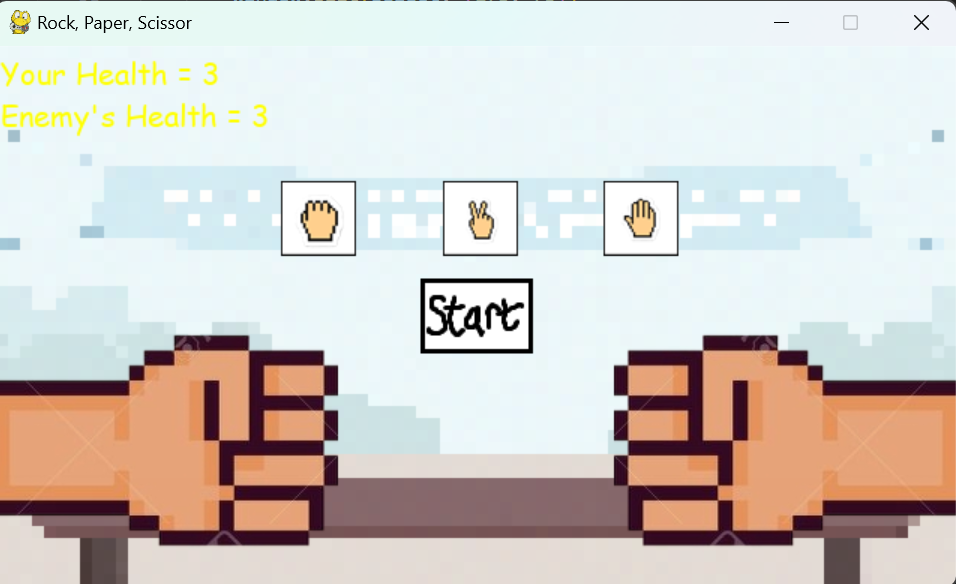
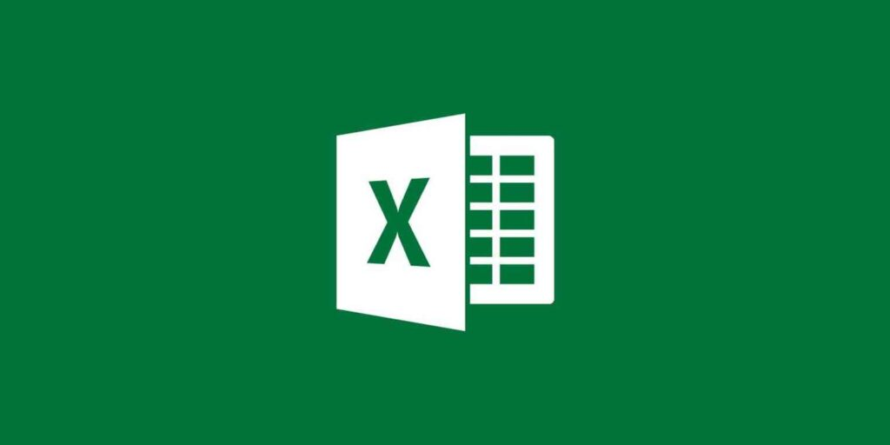
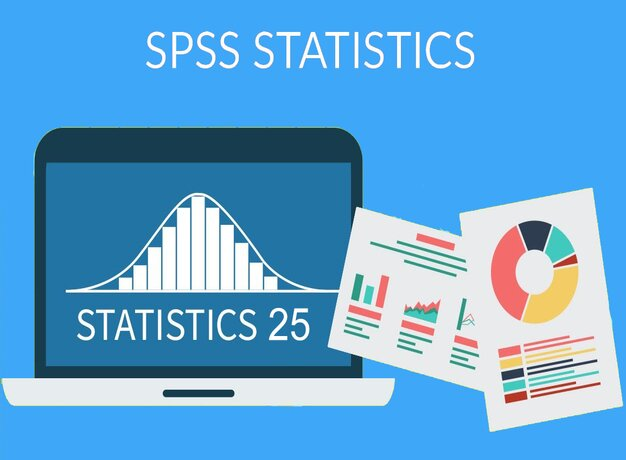
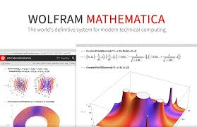

November 15, 2025
A simple 2d mini-game built with Pygame.
A small project perfect for practicing game loops, event handling, and image-based UI
design!
Suitable for learning, showcasing, or extending into a larger project.


A concise and interactive Power BI dashboard built from a dataset containing date, sales amount,
and coffee type. With dynamic filters and intuitive visuals, the dashboard helps users quickly
understand business performance and identify opportunities for improvement.
This Power BI dashboard is designed to help users easily filter and identify houses that match
their preferences. Using a dataset of city, district, price, and interior room details, the
dashboard allows users to narrow down properties through interactive slicers and dynamic
visuals.

Donec eget ex magna. Interdum et malesuada fames ac ante ipsum primis in faucibus. Pellentesque
venenatis dolor imperdiet dolor mattis sagittis magna etiam.

A simple Excel dashboard that visualizes coffee sales trends, highlights revenue by date, and
compares performance across coffee types for quick, clear insights.

I performed exploratory data analysis in SPSS to identify patterns and key factors in causes of
death in Indonesia, showcasing my skills in statistical analysis and insight visualization.

As part of my bachelor’s degree requirement, I built a Wolfram Mathematica program to solve
nonlinear equation systems using Newton’s method, Broyden’s method, and Gaussian quadrature,
demonstrating my skills in numerical algorithms and computational analysis.